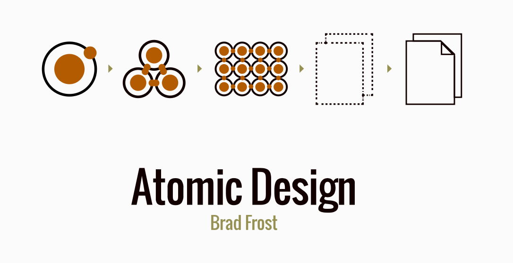

Design Systems
- Why Design Systems?
- Design System Process
- Design System Benefits
- Design System Deliverables
1: Why Design Systems?
- Atomic design is a methodology proposed by Brad Frost for building interface design systems
- The web is a continuum, not a platform
- The current environment includes an unknown number of devices and screens
- Photoshop comps aren't an accurate representation of our finished products
- Without design systems, consistency is quickly lost
- It's important for us to recognize the distinction between a design system and a visual language
Atoms, Molecules, Organisms, Templates and Pages
The Web Continuum
"The reality is that the web is a fluid, interactive, interdependent medium. As soon as we come to terms with this fact, the notion of the page quickly erodes as a useful means to scope and create web experiences."
-- Brad Frost, Atomic Design


A Game of Screens

The Tool Conundrum
"As Stephen Hay quipped, presenting fully baked Photoshop comps is the most effective way to show your clients what their website will never look like."
-- Brad Frost, Atomic Design
A Lack of Consistency
"I recently visited my health insurance provider’s website to pay my bill. In the course of five clicks, I was hit with four distinct interface designs, some of which looked like they were last touched in 1999...
...This inconsistent experience put the burden on me, the user, to figure out what went where and how to interpret disparate interface elements. By the time I got to the payment form, I felt like I couldn’t trust the company to successfully and securely process my payment."
-- Brad Frost, Atomic Design
Consistency Lack Of
"Good code never happens by accident. It’s not that developers are inherently lazy, or that we cannot be trusted, but left to our own devices, we are capable of producing a wide variety of solutions to the same problem...
Unlike a trip through a maze, crafting a code solution for a given problem rarely has a single best solution. Each of us tackles a problem differently because we have different experience, opinions, and tendencies."
-- Micah Godbolt, Frontend Architecture for Design Systems
Visual Language vs Design System
"A design system is the programmatic representation of a website’s visual language...
...The visual language, created by our designers, is an artifact that expresses how the website visually communicates its message to users. It is a collection of colors, fonts, buttons, image styles, typographical rhythms, and UI patterns used to convey mood, meaning, and intent."
-- Micah Godbolt, Frontend Architecture for Design Systems
2: Design System Process
- Focus on the parts over the whole
- Use interface inventories & audits to collect UI components
- Let the design system team work ahead of the implementation team
- Focus stories on the design system, not pages
Focusing on the whole

Focusing on the components...

...Makes it easier to build

Interface inventories document UI

Brad Frost's Google Slides Template

Great Minds Example
Design System before Implementation
"At Red Hat, our frontend development team has the incredible advantage of working multiple sprints ahead of our backend development. We set long-term goals for the features we want to build or update, and once we have a signed-off prototype, we pass it over to our development team to implement."
-- Micah Godbolt, Frontend Architecture for Design Systems
Cycles overlap

Ya gotta keep 'em iterated

Be the prep chef

User stories focus on components
"Instead of stories to make several changes to a single page, we should be focusing our frontend development stories on what changes we are actually making to our system. Rather than a large story with dozens of changes...
...we should have a story that looks like this: “Create a new CTA button that has 16px of padding instead of 8px of padding for use on any internal page”."
-- Micah Godbolt, Frontend Architecture for Design Systems
Pattern Lab Demo
3: Design System Benefits
Summary
- Best practices are part of the design system
- Public style guides are a fantastic benefit for recruiting
- Design systems improve efficiency across the board
Enforce Best Practices
"One of the biggest advantages of establishing a thoughtful design system is that it allows organizations to scale best practices. If all those best practices – responsiveness, accessibility, performance, UX, ergonomics, and so on – are baked into the system, users can simply plug in the patterns and reap the rewards...
...This means design system users don’t have to be senior-level designers or developers to produce good work; the design system serves as a quality control vehicle that helps users apply best practices regardless of each individual’s skill level."
-- Brad Frost, Atomic Design
Flaunt Our Stuff
"Public-facing style guides are also hugely helpful for recruiting. Designers, developers, and people working in other disciplines want to work for organizations that embrace modern digital best practices, and design systems are quickly becoming an industry-wide best practice."
-- Brad Frost, Atomic Design
I'm head of the class, I'm popular
A design systems conference:
https://www.clarityconf.com/
400+ public style guides:
http://styleguides.io/
Efficiency Meltdown
(stop me if you've heard this one)
"Depending on which designer, business analyst, or QA engineer is reviewing the contact form, and which version of whatever PSD they happen to be looking at, there is a 9 in 10 chance on any given day that your form has a defect (and therefore is totally broken)...
...A new story is created to address these defects, and you can only hope that the changes you are making aren’t going to make even more work for you the next time a designer takes a peek at the contact form."
-- Micah Godbolt, Frontend Architecture for Design Systems
Brad Frost's Pattern Library Benefits

Exponential Efficiency Explosion
"It started as nothing more than a collection of design elements and the markup that we hoped would be used in implementation, and it resulted in a streamlined and efficient prototyping-to-rendering pipeline that removed a great deal of repetitive work."
-- Micah Godbolt, Frontend Architecture for Design Systems
4: Design System Deliverables
Summary
The deliverable is the design system.
The design system allows the team to focus on the components, while simultaneously using those components to build full page prototypes, in the browser.
Browser Prototypes
"Working in the browser allows teams to address layout issues across the entire resolution spectrum, design around dynamic data (such as variable character lengths, image sizes, and other dynamic content), demonstrate interaction and animation, gauge performance, factor in ergonomics, and confront technical considerations (such as pixel density, text rendering, scrolling performance, and browser quirks)...
...Static design comps cannot deal with all these considerations, so they should be treated merely as hypotheses rather than set-in-stone specifications. Only when transferred to the browser can any design hypothesis truly be confirmed or rejected."
-- Brad Frost, Atomic Design
Signoff in the Browser
"Let’s change the phrase ‘designing in the browser’ to ‘deciding in the browser.’
-- Dan Mall
Clearleft is a a UX/UI consultancy that does no backend development
"Clearleft has shifted over the years from delivering a set of pages to the deliverable being a pattern library."
-- Jeremy Keith, on the Style Guide Podcast, May 25, 2015
Popular examples
Living style guides, or even better, Pattern Lab as a living styleguide can likely be implemented in Drupal, Wordpress, etc.
- Red Hat uses Pattern Lab in Drupal
- Lonely Planet built their own living style guide (called Rizzo) in Rails
- More research/investigation/experimentation required
Living style guides
I've developed living style guides (using KSS) for:
- Great Minds (Rails app)
- Rock Creek Group (Rails app)
- Verimatrix (Angular app)
- Message Systems (Angular app)